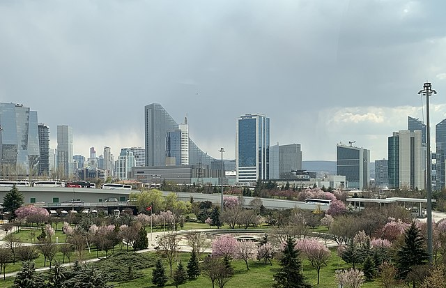
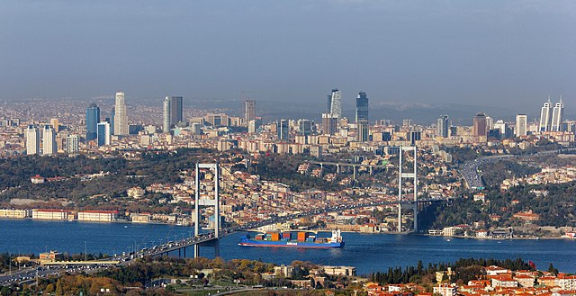

Bize Ulaşın
Youtube
Sayfalar
Ankara
İstanbul
Ankara

Ankara (/ˈaŋkaɾa/), Türkiye'nin başkenti ve Ankara ilinin merkezi olan şehirdir. Coğrafi olarak Türkiye'nin merkezine yakın
bir konumda bulunur ve İç Anadolu Bölgesi'nde yer alır.
Ankara'nın 13 Ekim 1923'te başkent ilan edilmesinin ardından şehir hızla gelişmiş ve Türkiye'nin ikinci en kalabalık ili
olmuştur. Türkiye Cumhuriyeti'nin ilk yıllarında ekonomisi tarım ve hayvancılığa dayanan ilin topraklarının yarısı hâlâ tarım
amaçlı kullanılmaktadır. Ekonomik etkinlik büyük oranda ticaret ve sanayiye dayalıdır. Tarım ve hayvancılığın ağırlığı ise
giderek azalmaktadır. Ankara ve civarındaki gerek kamu sektörü gerek özel sektör yatırımları, başka illerden büyük bir nüfus
göçünü teşvik etmiştir. Cumhuriyetin kuruluşundan günümüze, nüfusu ülke nüfusunun iki katı hızda artmıştır. Nüfusun yaklaşık
dörtte üçü hizmet sektörü olarak tanımlanabilecek memuriyet, ulaşım, haberleşme ve ticaret benzeri işlerde, dörtte biri
sanayide, %2'si ise tarım alanında çalışır. Sanayi, özellikle tekstil, gıda ve inşaat sektörlerinde yoğunlaşmıştır. Günümüzde
ise en çok savunma, metal ve motor sektörlerinde yatırım yapılmaktadır. Türkiye'nin en çok sayıda üniversiteye sahip ikinci ili
olan Ankara'da ayrıca, üniversite diplomalı kişi oranı ülke ortalamasının iki katıdır. Bu eğitimli nüfus, teknoloji
ağırlıklı yatırımların gereksinim duyduğu iş gücünü oluşturur. Ankara'dan otoyollar, demiryolu ve havayoluyla Türkiye'nin
diğer şehirlerine ulaşılır.
Bilinen tarihi en az 10 bin yıl öncesine, Eski Taş Çağı'na ulaşan Ankara, tarih öncesinden günümüze dek pek çok medeniyeti
barındırmıştır. Hititler, Frigyalılar, Lidyalılar, Persler, Galatlar, Romalılar, Bizanslılar, Selçuklular, Osmanlılar ve
nihayet Türkiye Cumhuriyeti, il topraklarını kontrolleri altında tutmuştur. Tektosagların ve Türkiye Cumhuriyeti'nin başkenti
olan Ankara şehri ve Frigyalıların başkenti Gordion, il sınırları içinde yer alır. Yıldırım Bayezid'in Timur'a yenik düştüğü
Ankara Muharebesi Çubuk yakınlarında ve Türk Kurtuluş Savaşı'nın dönüm noktası olan Sakarya Muharebesi ise Polatlı yakınlarında
yapılmıştır.
Ankara kara iklimine sahiptir. Şehir dışındaki il topraklarının büyük kısmı tahıl tarlalarıyla kaplı platolardan oluşur.
İlin çeşitli yerlerindeki doğal güzellikler korumaya alınmış, dinlenme ve eğlence amaçlı kullanıma sunulmuştur. İlin adını
taşıyan tavşanı, keçisi, atı ve kedisi dünya çapında bilinir, armudu, çiğdemi, yerel yemeklerden Ankara tavası ve Kızılcahamam
ve Beypazarı'nın maden suyu ise ülke çapında tanınır.
Sayfa Başına Dön
İstanbul

İstanbul, Türkiye'de Marmara Bölgesi'nde yer alan ve İstanbul ilinin merkezi olan şehirdir. Ekonomik, tarihî ve
sosyo-kültürel açıdan önde gelen şehirlerden biridir. Şehir, iktisadi büyüklük açısından dünyada 34. sırada yer alır.
Nüfuslarına göre şehirler listesinde belediye sınırları göz önüne alınarak yapılan sıralamaya göre Türkiye ve Avrupa'da birinci,
dünyada ise altıncı sırada yer almaktadır.
İstanbul Türkiye'nin kuzeybatısında, Marmara kıyısı ve Boğaziçi boyunca, Haliç'i de çevreleyecek şekilde kurulmuştur.
İstanbul kıtalararası bir şehir olup, Avrupa'daki bölümüne Avrupa Yakası veya Rumeli Yakası, Asya'daki bölümüne ise Anadolu
Yakası veya Asya Yakası denir. Tarihte ilk olarak üç tarafı Marmara Denizi, Boğaziçi ve Haliç'in sardığı bir yarımada üzerinde
kurulan İstanbul'un batıdaki sınırını İstanbul Surları oluşturmaktaydı. Gelişme ve büyüme sürecinde surların her seferinde daha
batıya ilerletilerek inşa edilmesiyle dört defa genişletilen şehrin 39 ilçesi vardır. Sınırları içerisinde ise büyükşehir
belediyesi ile birlikte toplam 40 belediye bulunmaktadır.
Dünyanın en eski şehirlerinden biri olan İstanbul, 330-395 yılları arasında Roma İmparatorluğu, 395-1204 yılları arasında
Bizans İmparatorluğu, 1204-1261 yılları arasında Latin İmparatorluğu,1261-1453 yılları arasında tekrar Bizans İmparatorluğu ve
son olarak 1453-1922 yılları arasında Osmanlı İmparatorluğu'na başkentlik yaptı. Ayrıca İstanbul, Hilâfetin Osmanlı
İmparatorluğu'na geçtiği 1517'den kaldırıldığı 1924'e kadar İslam dünyasının da merkezi oldu.
Son yıllarda ortaya çıkartılan arkeolojik bulgularla insanlık tarihine ilişkin önemli bilgiler elde edilmiştir. Yarımburgaz
Mağarası'ndan çıkarılan taş aletlerle, ilkel insan izlerinin 400.000 yıl öncesine dayandığı ortaya çıkmıştır. Anadolu Yakası'nda
yürütülen kazı çalışmaları ve bunlara bağlı araştırmalar, şehirde tarım ve hayvancılığa dayalı ilk yerleşik insan topluluğunun MÖ
5500'lere tarihlenen Fikirtepe Kültürü olduğunu göstermiştir.[16] Bu arkeolojik bulgular yalnızca İstanbul'un değil, tüm Marmara
Bölgesi'nin en eski insan izleridir. İstanbul sınırları içinde kent bazında ilk yerleşimler ise Anadolu Yakası'nda Kalkedon
(Kadıköy); Avrupa Yakası'nda Byzantion'dur. Cumhuriyet dönemi öncesinde egemenliği altında olduğu devletlere yüzlerce yıl
başkentlik yapan İstanbul, 13 Ekim 1923 tarihinde başkentin Ankara'ya taşınmasıyla bu özelliğini yitirmiş; ancak ülkenin ticaret,
sanayi, ulaşım, turizm, eğitim, kültür ve sanat merkezi olmaya devam etmiştir.
Karadeniz ile Marmara Denizi'ni bağlayan ve Asya ile Avrupa'yı ayıran İstanbul Boğazı'na ev sahipliği yapması nedeniyle,
İstanbul'un jeopolitik önemi oldukça yüksektir. Bugün tamamına yakını doldurulmuş olan ya da kaybolan doğal limanları vardır.
Bu özellikleri yüzünden bölge toprakları üzerinde uzun süreli egemenlik anlaşmazlıkları ve savaşlar yaşanmıştır. Başlıca
akarsular Riva, Kâğıthane ve Alibey dereleridir. İl toprakları az engebelidir ve en yüksek noktası Kartal ilçesindeki Aydos
Tepesi'dir. İldeki başlıca doğal göller Büyükçekmece, Küçükçekmece ve Durusu gölleridir. İl ve yakın çevresinde, Karadeniz ile
Akdeniz makro iklimleri arasında geçiş özellikleri görülür. Hava sıcaklıkları ve yağış ortalamaları düzensiz; bitki
örtüsü dengesizdir.
Sayfa Başına Dön